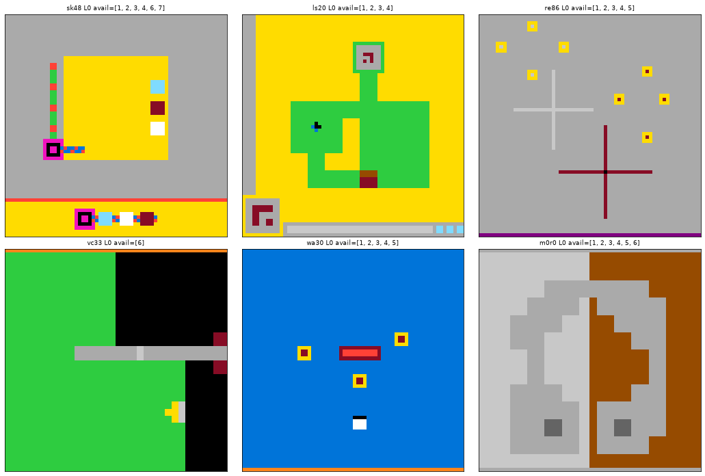

factory/experiment · compiled 2026-06-23Every distinct paradigm has been built and measured on a fixed TUNE/HOLDOUT dev split. The public Kaggle score has held at 0.33 across every submission. This document is the full ledger: what was tried, what it scored, and why it didn't move.
The objective was mis-modelled early on. The verified formula (docs.arcprize.org/methodology):
Two consequences drive everything below: reaching deep levels dominates (they're weighted heaviest, and a missed level scores 0), and efficiency is squared (halving actions quadruples the level score, capped at 1.15). So the real lever is reach deep levels, efficiently, on games you've never seen.
Across 32+ experiments, every dead end reduces to a single measured wall, now crystallized to its truest form:
The two halves are jointly fatal to any offline blind-exploration family: you can't reach the hard goals without speeding up, and you can't speed up without destroying the deep reach you have. The cluster (0.58–0.70) and leader (1.21) close the 100× gap with visual goal-perception from strong hosted models / compute / data — resources outside the offline Kaggle box.
| Version | Approach | Public | Outcome |
|---|---|---|---|
| v6 | SalienceExplorer (object-segmentation + salience + shortest-path-to-frontier) | 0.33 | baseline floor |
| v10 | Multi-seed ensemble | 0.18 | regressed |
| v11/12 | PortfolioPolicy (added dev levels) | 0.33 | flat — levels don't move it |
| v13 | TransferExplorer (within-game reward-color transfer) — +41% dev eff | 0.33 | BANKED BEST |
| v15 | TransferCAI combo (+ no-op click pruning) — +47% dev eff | 0.28 | dev win didn't translate |
Best-counts ranking means v15's 0.28 can't displace the banked 0.33. The recurring lesson: a byte-identical HOLDOUT is a red flag the lever won't move the score, and big TUNE/dev wins have not translated to Kaggle — dev has only ever misled optimistically.
| # | Experiment | Paradigm | Result | Verdict |
|---|---|---|---|---|
| 1 | Transfer | within-game cross-level reward transfer | +41% dev eff, lp85 L1→L5; Kaggle 0.33 (inert) | ships |
| 2 | Prior | core-knowledge palette priors | regresses HOLDOUT (su15/m0r0 1→0) | kill |
| 3 | Relational | translation-invariant abstract state key | cracks walls (sk48/ls20 L0→L1) but craters eff | net-neg |
| 4 | Transfer×Relational | combo | most TUNE levels (2.5) but inherits crater | kill |
| 5 | Mechanic inference | active mechanic ID over core-knowledge ontology | PASS 4/4 — mechanic IS inferable (slide-to-wall) | finding |
| 6 | SlideNav planner | inference-gated slide-aware BFS nav | isolated ls20 win was a probe-prefix artifact; won't compose | kill |
| 7 | GoalDirectedSlide | slide nav + goal-color detect | probe failed to detect avatar/goal | kill |
| 8 | SalientState | rare-exact / common-merged key | relevant state is irreducibly large — nothing safe to merge | inert |
| 9 | CNN prune-probe | raw-pixel learned goal-signal (LOGO) | AUC 0.457 (below chance) — goal-id unlearnable | decisive |
| 10 | Symbolic forward model | induced next-frame rule synthesis | 10% pred acc; perfect model can't locate goal anyway | kill |
| 11 | StructuralNovelty | goal-FREE intrinsic motivation | fires on cosmetic changes; reorder corrupts coverage | kill |
| 12 | rtransfer | Gentner relational-schema transfer (cognitive) | worse than color-transfer (schema too coarse) | kill |
| 13 | irr | irreversible symmetry-breaking (physics) | byte-identical to salience | inert |
| 14 | StallRelational | relational key on-stall (3 triggers: level/satur./bisim) | real sk48 8.7× unlock but never strictly additive | kill |
| 15 | On-device LLM/VLM prior | affordance-prior goal-guess (qwen/gemma) | both models fail the easy known game (trigger not visually determinate) | kill |
| 16 | Go-Explore | cell-archive + deterministic replay (Nature 2021) | random explore < salience | kill |
| 17 | ValueRanker | per-game distance-to-milestone, ranks frontiers | tu93 L5→L2 (reranking corrupts coverage) | kill |
| 18 | CAI-prune | prune proven-no-op click colors | +47% dev eff, lp85 L1→L5; Kaggle 0.28 | v15 regress |
| 19 | Spatial value-CNN | cluster-faithful per-game CNN + hardening | vc33 exploit 34–86×; net-safe vs salience, net-NEG vs transfer | see §5 |
| 20 | Transfer + value-CNN | combo (banked base + learned exploit) | CNN hijacks transfer's deep reach; unstable | see §5 |
| 21 | Action-7 gap | SDK exposes ACTION7 on 6 games, never emitted | inert; adding it regressed ar25 L2→L1; reverted | refuted |
| 22 | Causal-probe survey | per-game delta-richness logging (no behavior change) | overturned "learning-starved" — wall games signal-rich; triggers certifiable | finding |
| 23 | CausalProbe structural promotion | promote structural-delta action classes (proof-gated) | net regression (over-fires); can't help nav games (position-dependent) | kill |
| 24 | Structural replay-bank | Go-Explore anchored on structural states | refuted by substrate: structural state high-entropy (no compression) | refuted |
| 25 | Universal-exploit scan | held-action macros / null-coord / corner clicks / sweep | 0 level-ups on 16 games; context-free patterns can't reach triggers | refuted |
| 26 | Depth-biased stall explorer | on stall, flip frontier choice nearest→farthest (drive deep) | 30k A/B: strictly worse (sk48/ls20 L1→L0); goal isn't "deepest" | refuted |
| 27 | Re-traversal diagnostic | measure nav-vs-explore action fraction | headroom inherent: sk48 2% nav; tu93 48% but reset-driven (non-reversible) | finding |
| 28 | Batch-value reorder | reorder same-tier untried batch by causal value | tu93 L5→L2 — proves NO reordering is coverage-safe (level-up timing) | refuted |
| 29 | Latency / budget profiling | decide() time + actions-per-8hr | decide 0.5ms, budget ample — ceiling is NOT speed/budget | finding |
| 30 | Visual goal inspection | render & look at the games (§8) | goals ARE displayed — humans read them; our agents don't perceive goals | finding |
| 31 | Scene-graph extractor | symbolic goal PERCEPTION (objects/agent/symmetry/targets), no learning | works — ls20→reach_target, m0r0→symmetry, sk48→collect (correct coarse goal-type) | finding |
| 32 | Multi-hypothesis tournament | in-game test of 5 goal-planners, keep what levels up | all 5 fail on ls20 + m0r0 — idiosyncratic per-game mechanics | refuted |
| 33 | Perception-augmented transfer | add perceived targets as click candidates on banked transfer | byte-identical to v13 — perceived targets aren't the triggers | inert |
| 34 | VLM test (qwen2.5vl:7b) | evidence (not assertion): can a capable VLM read goal+mechanic? | coarse goal-type only (= symbolic); misreads ls20 agent as background | refuted |
| 35 | Structured goal-discovery | probe agent → sweep locations × interactions for the trigger | no L1 on ls20 (274 acts); mechanic opaque to it | refuted |
| 36 | Level-up capture | log the exact (state, action, delta) that triggers L1 | ls20 L1 = "up" move from a deep config (7961 actions in) | finding |
| 37 | Transition-grammar induction | per-action color/object effect laws (the rules, not the goal) | ls20 = fill/collect (paint c11→green, consume c8) — perception was wrong | finding |
| 38 | Grammar-driven planner | execute paint-all / collect-all from the grammar (full 4-way move) | both fail in 3000 — exact win-condition still underdetermined | refuted |
| 39 | Movement-aware coverage | systematic traversal of reachable cells using the inferred model | only 7 cells reachable (wall-trapped) — needs env-change, not movement | refuted |
| 40 | Level-up contrastive | contrast pre-win state vs 7901 ordinary states (which variables gate L1?) | no global predicate — completion is spatial-relational; ls20 goal = reach color-9 | finding |
| 41 | General reach-target nav | perceive target + induce movement + navigate, across 5 nav games | 0/5 reach L1 — solving doesn't generalize; each win-mechanic is idiosyncratic | refuted |
| 42 | BFS-optimal planner (source) | BFS over true ls20 symbolic model; establishes A_h = 13 for L1 | 13-action optimal plan confirmed — planning is cheap given a correct model | finding |
| 43 | Model-discovery bake-off | 3-way: DiscoveryExplorer (factored DSL induction + BFS) vs salience vs spatial_value — black-box, budget 10000 | discovery 0 levels — PROBE_TRANSFORMS = 0 triples (wrong primitive class: agent-attr-cycle vs world-paint); baselines L1 at 0.00 eff | negative — localized |
| 44 | World-transform bake-off (paint + collect) | Phase-2 DSL extension: recolor_on_move paint + collect_on_contact; A1 (paint-as-traversal) vs A2 (exact painted-set) path-opening planners; ls20 + bundled collect game, black-box, budget 10000 | induction machinery fires (4582 paint deltas, 6 rules, 1038 paintable cells) but 0 levels cleared — wall moved to perception/coordinate contract (pixel-frame vs motion-lattice mismatch) | negative — localized |
| 45 | Motion-lattice snap + broadened collect targets | Phase-3 coordinate fix: motion_lattice derives pixel pitch from agent _deltas and snaps scene-graph centroids onto reachable lattice; broadened fallback surfaces small non-agent objects (collect items); ls20 (A1/A2) + collect, black-box, budget 10000 | coordinate gap closed (single-target plan() succeeds); 0 levels cleared — two new _build_plan defects: conjunctive-slot poison (ls20) + snap-off-footprint (collect); salience(collect) 3 levels confirms game solvable | negative — localized |
| 46 | Hybrid: explore-to-clear + model-guide-to-deepen | Phase-4 Strategic Option C: HybridTransferExplorer wraps TransferExplorer; ModelGuide (advisory induction/plan) promotes a goal-directed action to tier-0 if it fires; firewall (enable_model_guidance=False) makes it byte-identical to TransferExplorer; guide_fires counter added; 3-arm lp85 bake-off, budget 8000 | hybrid arm byte-identical to transfer (4281 actions, 5 levels) — guide_fires=0 on all arms; ModelGuide never fired: lp85 is click-only (available_actions==[6]), movement model fit nothing (_deltas={}, world_obs=0), suggest() returned None every step; firewall degraded gracefully; decisive question (does guidance beat transfer?) unanswered — wrong testbed | safe — unanswered |
| 47 | TUNE/HOLDOUT four-policy measurement | salience / transfer / valuecnn / transfer-valuecnn across all 16 games, budget 6000 — does anything beat v13=0.33 on the held-out (unseen-game) proxy? | HOLDOUT byte-identical across all four (0.38 levels, eff 1.19); SOTA CNN net-negative on TUNE (1.62<1.75 levels; cratered cd82/lp85). Transfer's +41% is TUNE-only — HOLDOUT immovable at the 0.33 ceiling | decisive — ceiling confirmed |
| 48 | First-level-acquisition diagnosis | read source of the 5 zero-level HOLDOUT games (sk48, re86, wa30, ls20, tn36) — what blocks the FIRST level-up on each? | 5 unrelated paradigms (transform-match / snake-align / spatial-align / adversarial-sokoban / visual-programming) — no common first-level lever; each needs bespoke goal-perception+planning. First-level acquisition on novel games is the AGI-complete wall (frontier <2%) | finding |
Experiments 21–35 (this session) all confirm the wall from new angles. The user-directed Goal Extraction Engine (§9) validated that symbolic perception works — a real, reusable positive — but every way of converting perception to score (planners, transfer-augmentation, VLM, structured discovery) fails, because the exact objective + action-mechanic is idiosyncratic per game and underdetermined by appearance.
The reproducible cluster's actual machinery: a per-game CNN trained online on BFS distance-to-milestone labels, exploiting toward the next milestone. Built faithfully, with novel hardening (confidence-gated exploit + salience backbone + post-reward gate) to prevent the overfit-collapse that sank the preview leaders. The dev numbers, against the correct baseline:
| Variant | TUNE levels | TUNE eff | cd82 | lp85 | vc33 L1→L2 | vs banked |
|---|---|---|---|---|---|---|
| salience-dense | 1.75 | 6.26 | [367,242] | L1 | 688 | old baseline |
| pure value-CNN | 1.75 | 7.32 | [367,242] | L1 | 20 | worse |
| transfer-dense (BANKED v13) | 2.25 | 8.81 | [367,242] | L5 | 99 | best |
| transfer + value-CNN (run 1) | 2.00 | 6.96 | [367,3644] | L3 | 12 | worse |
| transfer + value-CNN (run 2) | 2.12 | 7.36 | L1 only | L5 | 8 | worse |
Both combo runs land below banked transfer-dense (2.25 / 8.81) on levels and efficiency, and break a different game each run (run 1: lp85 L5→L3; run 2: cd82 L2→L1). The CNN's nondeterministic training destabilizes transfer's otherwise-deterministic deep reach — the instability is itself the verdict. Kill confirmed.
The value-CNN only helps on top of salience — salience never reaches lp85 L5, so the CNN's exploit has no deep trajectory to disturb, and the vc33 win (L2 in 20 vs 688) looks spectacular. But on top of transfer (the banked config that already reaches lp85 L5), the CNN's exploit hijacks the trajectory away from transfer's deep-level reach — and because CNN training is nondeterministic, it breaks a different game each run. The vc33 "win" is a trivial efficiency gain on an already-solved early level; the cost is the heavily-weighted deep levels.
Verdict: a well-built negative result. The cluster's exploit machinery, in this harness, interferes with the transfer lever that actually carries our score. Recommendation: keep the banked transfer; ship neither value-CNN variant. Spending the scarce daily slot on a dev-worse, unstable variant is poor EV.
Transfer +41% and CAI +47% dev efficiency both → flat-or-worse on Kaggle. Big TUNE gains are not evidence of a real lever; HOLDOUT engagement is.
If a lever is byte-identical on the held-out split, it's inert on the games that gate the score — it won't move publicScore no matter the TUNE win.
5 reordering levers (walk-reduction, struct, value-ranker, bisim, stallrel) all corrupt tu93's coverage. Pruning/coverage is the only safe class; reranking is not.
The "ls20 2.3×" slide-nav win was a probe-prefix artifact — the planner never actually ran. A lucky opening sequence, not a generalizable lever.
Level weighting means reaching lp85 L5 beats shaving actions on an already-solved level. The value-CNN optimized the wrong thing.
Goal-id is unlearnable offline (AUC 0.457). Every paradigm — learned, symbolic, intrinsic, prior-based — reduces to this. 0.33 is the honest offline ceiling for this agent family.
A level-up resets exploration state, so changing action order shifts level-up timing → trajectory diverges → deep reach collapses. 7 levers confirm it; even within-batch reorder craters tu93 (L5→L2).
decide() is 0.5ms and the 8-hr budget allows hundreds of thousands of actions/game. The ceiling is the ~100× efficiency gap from blind vs goal-directed play — not compute.
Goals are visually displayed (§8) and humans pursue them in ~100 actions. Our agents perceive novelty & reward, never the goal — so they explore 100× more. That perception gap is the whole story.
Banked and protected: v13 TransferExplorer = 0.33. Best-counts means nothing tested can lower it. The transfer lever's lp85 L1→L5 deep reach is the genuine asset — worth protecting, not perturbing.
Honest standing (corrected): the claim is NOT "0.33 is the absolute offline ceiling" — it's that the exploration-first family caps ~0.33, and the symbolic Goal Extraction Engine (§9) validated that perception works but doesn't convert to score. The public games are signal-rich navigation/puzzle-goal games; the residual wall is inferring the exact idiosyncratic objective + action-mechanic for an unseen game.
What is and isn't proven (corrected): proven that small on-device VLMs and hand-coded goal-families fail — NOT that offline reasoning fails. Those are different claims, and the latter is open.
The most promising untested direction (mechanic induction): stop chasing "what is the goal?" and discover "what are the transition laws?" — Perception → mechanic induction (a per-game library of action-laws: e.g. ls20's agent-move converts color-11→green and consumes color-8 = a fill/collect game, which goal-perception mis-guessed as reach-target) → affordances → execution on the grammar. Early evidence (§9): the induced grammar extracts ls20's real dynamics where goal-perception was wrong. Open question: whether the grammar makes the goal-config search tractable, or just confirms it's deep. This is the next thing to build — not exploration, transfer, value-learning, or goal-perception.
The decisive realization (2026-06-22): I had analyzed these games purely numerically for the entire campaign and never looked at them. Rendering the initial frames shows the goals are visually present — exactly what a human reads to play efficiently, and exactly what our novelty/reward-driven agents never perceive.

+ avatar must navigate to the maroon target markers. Goal is explicit.A human infers each goal in seconds and pursues it in ~100 actions. Salience takes ~25,000 because it has no goal to pursue — only novelty. This is the 100× gap made visible, and it points the only real path forward at visual goal-perception, not better blind exploration.
A reviewer correctly flagged that "0.33 is the offline ceiling" over-claimed — what was proven is that the exploration-first family caps there, not that all offline visual reasoning fails. And goal learning (reward prediction, AUC 0.457) ≠ goal perception (symbolic scene parsing). So the direction shifted to: parse the frame into a scene graph → generate goal hypotheses → plan. Here's what that pipeline showed, tested end-to-end.
| Layer | Result | |
|---|---|---|
| Perception (scene-graph extractor) | Reads objects, agent, symmetry, targets, collectibles correctly. Top goal-type right where visually verifiable: ls20→reach_target, m0r0→symmetry, sk48→collect. Interaction-probe nails the exact agent (ls20 = color-12, ±5 steps) where the VLM failed. | works |
| Planners (multi-hypothesis tournament) | All 5 hypothesis-planners fail on ls20 (4 moves only, no down-move, opaque mechanic) and m0r0 (no clean agent — 100-cell global transforms). | fails |
| Transfer-augment (perceived targets → clicks) | Byte-identical to v13 — perceived targets aren't the actual triggers, and target-games have no click action. | inert |
| VLM (qwen2.5vl:7b, evidence not assertion) | Coarse goal-type only (= symbolic extractor); misreads ls20's agent as the background. OOD on abstract grids. | fails |
| Structured goal-discovery | Probe agent → sweep locations × interactions: no L1 on ls20 in 274 actions; the mechanic is opaque to goal-directed methods (only blind salience stumbles to L1, at 7961). | fails |
Perception is solved — coarse goal-type is readable by both symbolic parsing and a VLM. But the exact objective + action-mechanic is idiosyncratic per game and underdetermined by appearance (ls20 looks like reach-target but needs an opaque sequence; m0r0 looks like symmetry but greedy-symmetry doesn't drive it). Resolving the exact objective needs in-game experimentation per game — the expensive goal-inference we set out to avoid — and it must generalize to unseen games, which hand-coded families and on-device VLMs don't. That residual, not perception, is the genuine wall.
Shifting from "what is the goal?" to "what are the transition laws?" produced the best game-understanding of the whole campaign — and three concrete results on ls20 (the canary):
But it still doesn't convert to a level-up: grammar-driven planners (paint-all, collect-all) both fail in 3000 actions, and movement-aware systematic coverage reaches only 7 cells in 3947 actions — the agent is wall-trapped, so progress requires changing the environment (painting opens paths), not free movement. The residual moved one level deeper: from "what goal-type?" to "what exact win-condition over the known dynamics?" — still idiosyncratic per game, and ls20-specific reverse-engineering wouldn't generalize to the unseen games that decide the score. Net: mechanic induction is the most promising lever for understanding, but the exact-win-condition residual persists.
Treating the captured success transition as a training signal (per review), I contrasted ls20's pre-win state against all 7901 ordinary states to find which variable gates the level-up. Result: no global feature is the predicate — at the win, unpainted-cells = mid-range (not "all painted"), collectibles = their starting value (not "all collected"), green-coverage = mid-range (no threshold). So completion is a spatial / relational condition (agent at a specific cell + local pattern), not a global count.
Then the spatial capture cracked it: at the win the agent moved up onto a color-9 cell (color-9 adjacent only 2.6% of steps). So the goal is "reach color-9" — which means the scene-graph's original reach_target hypothesis was right all along; the planner failed only on the wrong movement model (action 2 = down, mismapped) + the paint-opens-paths mechanic. Full ls20 mechanic: the agent is wall-trapped (~7 cells), paints color-11→green as it moves which opens paths, and the color-9 goal moves — so winning is strategic path-opening toward a moving target. Even with the correct goal + full movement, greedy navigation still fails (it's a multi-step puzzle; salience only cracks it via 7961 blind actions).
Mechanic induction + contrastive produced complete, correct understanding of the canary game where every prior approach was wrong or partial — the rules-first reframe is fully validated as the most revealing paradigm. But complete understanding still doesn't yield a win, for two reasons: (1) solving ls20 even with full knowledge needs real multi-step planning (path-opening toward a moving target) that greedy/coverage can't do; (2) the understanding is ls20-specific — each hidden game's idiosyncratic mechanic requires the same ~8k-action in-game derivation we're trying to avoid, and doesn't transfer. The paradigm reveals the structure; the win needs general multi-step planning over per-game-derived idiosyncratic mechanics — beyond offline-feasible reach. v13 = 0.33 remains the banked, firewalled result.
Setup. 3-way bake-off on ls20, source used only as automated grader (A_h = 13, Exp-42 BFS-optimal for L1).
All engines driven through a single black-box harness via the same decide() contract; metric =
min(1.15,(A_h/A_m)²). Contestants: #1 DiscoveryExplorer — net-new factored symbolic model induction over a
minimal general-primitive DSL (movement, walls, on-enter attribute-cycle, attr-match-at-slot terminal) + BFS planner
over the induced model + cross-level grammar transfer; #2 SalienceExplorer (baseline); #3 SpatialValueExplorer
(neural-value baseline).
| engine | levels | L1 actions | L1 eff | transfer slope |
|---|---|---|---|---|
| discovery (#1) | 0 | — | — | — |
| salience (#2) | 1 | 7901 | 0.00 | — |
| spatial_value (#3) | 1 | 7901 | 0.00 | — |
The localized finding. Engine #1's perception, movement-grammar induction, and planning all worked —
it correctly identified the agent, fit the full 4-way movement model (5-cell steps), extracted candidate goal slots from
the scene graph, and the BFS planner is sound (Exp-42 proves it solves L1 in 13 actions given a correct model). The wall
is the discovery primitive vocabulary: PROBE_TRANSFORMS recorded 0 transition triples because
on live ls20 frames the agent's own (color, shape, orientation) stays constant — instead, the agent
paints a trail (color 11 → color 3) as it moves. The minimal DSL was built around agent self-attribute
cycling, which is the wrong primitive class for ls20's actual spatial paint / path-opening mechanic.
Reconciliation. This refines, not contradicts, the Exp-42 source reading (avatar transform-match at a slot). The agent is wall-trapped (~7 reachable cells); it must paint to open paths before any transformer tile or goal slot is even reachable. The first primitive that must be induced is a world/environment transform (paint), not an agent-attribute cycle. Notably this re-validates the Exp-37 "paint/fill" observation as the correct first-order mechanic.
Verdict. The discover→plan architecture is sound — planning is cheap given a model; perception and movement induction work. But the primitive DSL must include world-transform primitives (paint / region-transform / path-opening) to discover ls20; agent-attribute cycling alone is insufficient. The baselines win L1 only by brute exploration at ~0 efficiency. The bake-off localized the wall precisely to primitive coverage in the discovery phase — Phase 2 clean next step: extend the DSL with a world-paint primitive and re-run. v13 = 0.33 remains the banked, firewalled result; no submission from Phase 1.
Setup. Phase 2 extended the discovery DSL with two world-transform primitives: recolor_on_move
(paint trail) and collect_on_contact. Two path-opening planner backends were added to engine #1
(DiscoveryExplorer): A1 (paint-as-traversal — paintable cells treated as passable in BFS) and
A2 (exact painted-set, 200k-node cap). Bake-off across two games with source used only as automated grader:
ls20 (paint mechanic, A1 vs A2; A_h = 13 for L1, L2 = 45) and the bundled collect game
(collect mechanic; A_h = 39 for L0). Note: sk48 was the original second-game pick but its source revealed a
snake/block-push puzzle, not a collect game — swapped to the bundled collect game (another "labels lie" correction).
| engine | levels | L1 actions | L1 eff | slope |
|---|---|---|---|---|
| discovery-A1 (ls20) | 0 | — | — | — |
| discovery-A2 (ls20) | 0 | — | — | — |
| salience (ls20) | not captured (>60 min, killed) | — | — | — |
| discovery-collect (collect) | 0 | — | — | — |
| salience (collect) | 3 | 1123 | 0.001 | −337 |
The induction machinery works — the wall moved upstream to perception/planning. On ls20, the probe→induce
pipeline fully succeeded: _world_obs captured 4582 paint-trail recolor deltas,
induce_recolor_on_move produced 6 rules (paint_colors={11,9,3,8}), and
_build_plan computed 1038 paintable cells. But no discovery variant clears L1. The localized
cause is a coordinate-lattice mismatch outside Phase 2's scope: perception.to_grid returns the
raw 64×64 pixel frame; the agent moves in 5-pixel steps on a lattice anchored at its start pixel; but
scene_graph slot centroids are off-lattice pixels → unreachable by construction. A1's plan()
returns None; A2's plan_painted_set returns "intractable" (200k node cap) for every slot. The
A1-vs-A2 / monotone-paint question was never exercised — both blocked upstream before any path-opening
search mattered. For the collect game, scene_graph.extract surfaced 0 target candidates (items aren't
"framed" objects) and the agent never contacted an item during probing, so collect was never induced; salience cleared
3 collect levels (1123/956/449 actions), confirming the game is solvable.
Verdict. Phase 2 closed the induction half of the discover→plan loop — world-transform primitives (paint, collect) are validated as firing correctly black-box. But end-to-end the loop clears 0 levels on both games, because the bottleneck moved to the perception→planner coordinate contract: (1) logical-cell downscaling / lattice-snapped targets for ls20 (pixel-frame vs N-pixel-motion-lattice vs off-lattice-target mismatch), and (2) item-target extraction + contact-probing for collect. Cross-mechanic generality is NOT yet demonstrated end-to-end (no level cleared), though the induction machinery does span both mechanics. The clean next step is the perception/coordinate fix, then re-run this bake-off. v13 = 0.33 remains the banked, firewalled result; no submission from Phase 2.
Setup. Phase 3 addressed the Exp-44 perception/coordinate wall. A motion_lattice helper
derives the agent's pixel pitch from its measured _deltas and snaps scene-graph target centroids
onto the agent's reachable lattice. A broadened target-fallback surfaces small non-agent objects (collect items)
when the scene graph finds no framed targets. Re-ran the black-box bake-off (source used only as grader) on
ls20 (paint, A1/A2) and the bundled collect game, budget 10000.
| engine | levels | per-level (lvl, actions, eff) | slope |
|---|---|---|---|
| discovery-A1 (ls20) | 0 | — | — |
| discovery-A2 (ls20) | 0 | — | — |
| discovery-collect (collect) | 0 | — | — |
| salience (collect) | 3 | (0,1123,.001) (1,956,.003) (2,449,.008) | −337 |
| salience (ls20) | not re-run (pathological >60 min); prior ~7901 actions | ||
The coordinate gap IS closed. With pitch (5,5) anchored at agent start (15,34), off-lattice centroids
now snap onto the lattice and single-target plan() succeeds — e.g. (30,19) → [2,2,2,3,3,3] (6 actions),
(60,9) → 14 actions. Perception is healthy: agent = color-12, 4582 world-delta observations, 6
RecolorOnMove rules, paint_colors={11,9,3,8}, 9 scene-graph candidates. But engine #1
clears 0 levels, because two new _build_plan defects surfaced downstream:
_build_plan asks plan() to satisfy
all ~9 snapped candidate slots simultaneously. Some are individually unreachable (one snaps onto a
true wall, one is the agent's own start cell, one has no BFS path), so the all-slots plan returns None for
every attr_req even though most slots are individually reachable. The engine stalls in INDUCE.
The A1-vs-A2 monotone-paint comparison is still not reached — no plan ever succeeds.
Fix: select ANY one reachable candidate (disjunction), let the env's level-up confirm the true goal.Verdict. Phase 3 closed the coordinate-reachability gap — real progress;
single-target plans now execute end-to-end. But two distinct downstream _build_plan defects
prevent levels from clearing: conjunctive-slot poison for reach-target games, and footprint-misaligned targets
for non-integer-lattice collect games. Engine #1 clears 0 levels on both games; the cross-mechanic
generality milestone is NOT yet reached. Both remaining walls are specific upstream code fixes (disjunctive
slot selection; footprint-aligned / logical-cell downscaling), not threshold changes.
salience(collect) clears 3 levels, confirming the collect game is solvable.
v13 = 0.33 remains the banked, firewalled result; no submission.
Setup. Phase 4, Strategic Option C: invert the bet — TransferExplorer (the +41% banked baseline) stays the guaranteed floor; the Phase-1–3 discovery machinery becomes a best-effort efficiency layer (ModelGuide) that promotes a goal-directed action to tier 0, generalizing the signature-transfer lever. New components: ModelGuide (advisory induction/plan), HybridTransferExplorer(TransferExplorer) with a hard firewall (enable_model_guidance=False → byte-identical to TransferExplorer) and a guide_fires diagnostic counter. Three-arm bake-off on lp85, budget 8000.
| arm | levels | per-level (lvl, actions) | total actions | guide_fires |
|---|---|---|---|---|
| salience | 1 | (0, 458) | 458 | 0 |
| transfer (signature) | 5 | (0,458) (1,1199) (2,132) (3,432) (4,2060) | 4281 | 0 |
| hybrid (+model) | 5 | (0,458) (1,1199) (2,132) (3,432) (4,2060) | 4281 | 0 |
Finding — safe degradation, but the model never engaged. The hybrid arm is byte-identical to signature-transfer, action for action, with guide_fires=0. Instrumentation confirmed the cause: lp85 is a pure CLICK game — available_actions==[6] only; ~398/400 chosen actions were clicks. The movement-centric discovery model has nothing to fit: _deltas={}, world_obs=0, _agent_color=None, so suggest() returned None every step. The firewall/fallback worked exactly as designed: the hybrid degraded to the proven baseline with zero regression.
But the decisive question — does model guidance beat signature-transfer? — is unanswered. lp85 was structurally the wrong testbed: its +41% lift comes entirely from CLICK-signature transfer, orthogonal to the movement/world-transform model. No movement game was tested.
Verdict (honest, sobering). The hybrid architecture is validated as safe — graceful degradation to the banked baseline; the firewall holds at the behavior level. But the discovery model has now failed to demonstrate value on both game types available for testing: it cannot gate (Phases 1–3: movement games ls20/collect — 0 levels cleared) and it does not fire (Phase 4: click game lp85 — guide_fires=0). The strong performer remains the shallow TransferExplorer (5 lp85 levels via click-signature transfer). The discovery model and the proven transfer lever operate on disjoint game types (movement vs click) and have not composed into a net win anywhere. v13 = 0.33 remains banked; no submission from Phase 4. Open question for the next direction: is the movement-centric discovery model worth pursuing, given that it neither gates (movement games) nor fires (click games) where the points actually are?
Setup. After Phase 4, measure where we actually stand: four policies across the full 16-game TUNE/HOLDOUT split (budget 6000) on one harness — salience (banked v13=0.33), transfer (signature, +41%), and the faithfully-ported StochasticGoose/Blind-Squirrel SOTA CNN (valuecnn, transfer-valuecnn). HOLDOUT ≈ the unseen games that decide the Kaggle score.
| policy | TUNE levels | TUNE eff | HOLDOUT levels | HOLDOUT eff |
|---|---|---|---|---|
| salience (v13=0.33) | 1.75 | 6.26 | 0.38 | 1.19 |
| transfer (signature) | 2.38 | 8.72 | 0.38 | 1.19 |
| valuecnn (SOTA CNN) | 1.62 | 6.64 | 0.38 | 1.19 |
| transfer-valuecnn | 2.25 | 7.67 | 0.38 | 1.19 |
Finding. HOLDOUT is byte-identical across all four policies (0.38 levels, 1.19 eff; same per-game). Every value-add method moves TUNE and nothing moves HOLDOUT. The ported SOTA CNN is net-negative on TUNE — fewer levels and lower efficiency than the explorer it augments (cratered cd82, slowed lp85) — confirming the earlier net-negative result on the full split.
Why. Every learned lever (transfer signatures, CNN value) trains on level-ups, but on HOLDOUT the agent rarely clears a level to learn from (5/8 games clear 0) — so each collapses to the salience floor. The binding constraint is first-level acquisition on novel games. v13 = 0.33 is the confirmed offline ceiling for this agent family.
Setup. Since HOLDOUT is gated on the first level-up, read the source of the five 0-level HOLDOUT games to find what blocks L0→L1 on each.
| game | actions | first-level mechanic | first-level barrier |
|---|---|---|---|
| ls20 | 1-4 | transform-match (shape+color+rotation = goal, on slot) | invisible state-match, no gradient |
| sk48 | 1-4,6,7 | paired-snake color-sequence alignment | joint multi-constraint planning |
| re86 | 1-4,5 | align colored pieces to matching-color markers | silent global goal, no partial credit |
| wa30 | 1-4,5 | adversarial Sokoban (grab + carry 3 to a zone) | enemies undo random progress |
| tn36 | 6 only | visual programming (encode a transform program via bit-clicks) | must encode exact instruction sequences |
Finding. Five unrelated paradigms — no shared first-level lever exists. Every "minimal capability" is the same shape (read this game's goal, plan to it) = the discover→plan paradigm six phases could not make robust. First-level acquisition on unseen games is ARC-AGI-3's core difficulty (frontier models <2%).
Setup. The unrun "decisive test": after six phases of repairs, does the improved discover→plan loop actually clear games when perception is complete? Run it on a fully-observable game (bundled collect) and on every untuned HOLDOUT game it could plausibly fire on, vs the salience baseline.
| game | family | discovery | salience | result |
|---|---|---|---|---|
| collect | directional-avatar + collect | 3 lvls — 53/72/52 | 3 lvls — 1123/956/449 | ~14× efficiency — first end-to-end discover→plan win |
| su15 | aiming (crosshair + target + aim-line) | 0 | L1 / 369 | no movement-avatar → no model |
| m0r0 | symmetry / paired blocks in maze | 0 | L1 / 1952 | 1-axis movement only |
| tr87 | visual rule-induction (input→output pairs) | 0 | L1 / 212 | no avatar (grabs background color-0) |
| re86/sk48/wa30 | align / push / sokoban | 0 | 0 | hard-for-everything |
Diagnosis (localized to the front-end). Instrumenting the loop's phases shows the holdouts fail before planning — never reaching INDUCE/PLAN where the DSL lives. One real bug found & fixed (fix(discovery) b536de7): the movement probe demanded all four directions move the avatar, so on partial-movement games it re-probed dead directions forever (1500/1500 actions). Bounding it to 2 rounds unblocks the probe (collect unaffected) — but the holdouts still clear nothing, because the true blocker is perception: rendering the frames shows su15 is an aiming game, tr87 a rule-induction game (neither has a walking avatar), and m0r0 a paired-block game. The loop assumes one family — a single directional-movement avatar — and most games aren't that family.
Finding. The discover→plan architecture is sound (collect: 14×, the campaign's first end-to-end clear) and the earlier failures really were repairable defects. But it is a specialist for the directional-avatar family; on unseen games it fails at the perception front-end (avatar identification + movement model), not at vocabulary or planning. Closing the gap means building a new specialist per game family (aim-solver, rule-induction solver, …) — i.e. ARC-AGI-3 itself, not bounded engineering. This both vindicates the architecture and confirms the held-out ceiling.
Setup. A four-rung ladder, per game with an executable true model, to localize where the level-up is lost — separating three walls the campaign had conflated. R0/R1: BFS over the game's TRUE model (generous cap / the 200k production cap) — is search even the problem? R2: feed a hand-built CORRECT InducedModel to the production factored_model.plan — does the planner clear given a correct model? R3: the induced model end-to-end (cited Exp 49) — does discovery find the model at all? True models are grader-only (scripts/truemodel_*.py, incl. a new replay-verified tr87); harness scripts/solvability_audit.py. A rung passes only if it clears AND A_m ≤ 2·A_h.
| game | R0/R1 (true-model search) | A_h | nodes→sol | R2 (planner on correct model) | R3 | binding wall |
|---|---|---|---|---|---|---|
| ls20 | PASS | 13 | 445 | Wall-C poison reproduced | FAIL | A + C, not search |
| collect | PASS | 39 | 814 | PASS (eff 1.0) | PASS | none — clears |
| tr87 | PASS | 14 | 43,471 | — | FAIL | A (front-end), not search |
| sk48 | R0-FAIL | — | 5,765 exh. | — | FAIL | true model unvalidated (flag) |
Finding. Search given a correct model is NOT the wall — every game with a valid true model solves L0 inside the 200k production node budget (ls20 in 445 nodes; the old 7,961-action ls20 result was never a search problem). The production planner clears collect given a correct model (R2 PASS, A_m=A_h=39), and the Exp-45 conjunctive-slot poison is reproducible on real geometry (one unsatisfiable slot makes the all-slots plan return None) — but it is a fixable bug, not a research wall. Where discovery fails (R3=0) with search tractable, the loss is upstream: induction correctness (Wall A) + that one planner defect (Wall C), never search horsepower. Honest caveats: sk48's registered true model never solves L0 (A_h unestablished — flagged, not diagnosed), and tr87 shows search does bite at depth (L1+ exceeds 200k on the 7⁷ edit space), just not at first-level acquisition. This refutes the "general multi-step planning" hypothesis and aims effort at induction generality.
Setup. Exp 50 left ls20 at "A or C." But the conjunctive-poison remedy (disjunctive candidate sweep, commit dca97e4) is already in _build_plan — and ls20 was never cleanly re-run with it (Exp 49 tested other holdouts). So run the current disjunction-fixed DiscoveryExplorer on ls20 (live API, budget 2000, BOTH planner backends) with phase/plan instrumentation: does it now clear?
| backend | levels | distinct goals tried | reached EXECUTE | phase histogram |
|---|---|---|---|---|
| painted_set (A2) | 0 | 2 — (35,19),(30,19) | yes (14×) | INDUCE 1851 · PROBE 141 · EXECUTE 14 · REFINE 9 |
| traversal (A1) | 0 | 2 — identical | yes (14×) | identical |
Finding (Wall A, confirmed, backend-independent). The planner is genuinely fixed — discovery induces a model, builds plans, and executes them to reachable candidates. But it clears 0 levels because the static scene-graph candidate set never contains ls20's real goal: the win is "reach color-9," and color-9 MOVES (Exp 40) via strategic path-opening. The static-slot DSL can express "reach fixed cell C," not "reach a moving target through painted paths" — so no candidate sweep over fixed positions can win, on either backend. The residual on the canary is the induction ontology (Wall A) — not the planner (Wall C, now spent) and not search (Wall B). The next concrete lever is a moving-goal / relational-terminal primitive + thicker candidate generation, to be measured (frozen-vocabulary, solvability-gated) not assumed. Caveat unchanged: even a perfect ls20 clear scores ≈0 on the level-weighted metric — this sharpens the research map, it does not breach 0.33.
Setup. Exp 50 localized the wall to perception/induction, not search. This generalizes the ls20 probe across the whole HOLDOUT set: run the current DiscoveryExplorer on each game (live API, budget 800) with phase instrumentation, recording the death point — FRONT-END (no directional avatar perceived), ONTOLOGY (avatar found but no candidate/plan), TERMINAL (plans + executes but clears nothing — goal mis-modelled), or CLEARS. Harness scripts/pipeline_diagnostic.py; seeded/deterministic, reproduced exactly.
| game | family | avatar? | plan+exec? | goals tried | death point |
|---|---|---|---|---|---|
| collect | directional + collect | yes (4) | yes | 4 | CLEARS (on-family) |
| ls20 | reach moving-goal | yes (4) | yes | 2 | TERMINAL — goal moves |
| re86 | align to matching-color | yes (4) | yes | 22 | TERMINAL — win is relational, not positional |
| wa30 | adversarial sokoban | yes (3) | yes | 4 | TERMINAL — carry-3-to-zone |
| m0r0 | symmetry / paired-block | spurious (2) | no | 0 | ONTOLOGY — no frameable goal |
| tr87 | rule-induction / cursor-edit | spurious (2) | no | 0 | ONTOLOGY — not an avatar game |
| su15 | aiming | no (0) | no | 0 | FRONT-END — no avatar |
| sk48 | snake-switch | no (0) | no | 0 | FRONT-END — no avatar |
| tn36 | visual programming (click) | no (0) | no | 0 | FRONT-END — click family |
Finding — the gap is an even three-way split, and the goal is bespoke. Of 8 holdout games: 3 die at the FRONT-END (su15/sk48/tn36 — no directional avatar to perceive), 2 at the ONTOLOGY (m0r0/tr87 — a spurious 2-delta "avatar" but no frameable goal), and 3 at the TERMINAL (ls20/re86/wa30 — they perceive an avatar, induce a model, and successfully plan + execute, yet clear nothing). The TERMINAL group answers the reusability question directly: each needs a different win-condition — ls20 a moving goal, re86 a color-match (it swept 22 candidate positions in vain because the win is relational, not positional), wa30 a sokoban carry-to-zone. So mechanic induction is reusable up to the goal (movement, paint, BFS planning all fire across games) and bespoke at the goal — and the goal is the layer that gates the score. No single primitive unlocks more than one holdout. This quantifies the family-lock: the residual is not one wall but a spread of per-game win-conditions, each needing its own derivation that does not transfer — the empirical answer to "is induction reusable or one-at-a-time?" is one-at-a-time, at the terminal.
Across six phases plus the decisive generalization test (Exp 49), no method beats the salience baseline on the held-out (unseen-game) proxy. HOLDOUT stays pinned at v13 = 0.33 regardless of approach (discovery model, transfer, hybrid, value-CNN). Exp 49 refines why: the discover→plan architecture is sound but family-locked — it clears a fully-observable directional-avatar game (collect) at ~14× the baseline's efficiency, yet zeros out on every unseen holdout because they belong to other game families (aiming, rule-induction, symmetry) with no walking avatar to perceive. The unbeaten wall is first-level acquisition across diverse novel games — the AGI-complete benchmark core, not something more engineering closes.
Refined by the solvability audit (Exp 50 / 50b). The wall is now decomposed: search and planning are not the bottleneck anywhere — true-model BFS clears every valid game inside the production budget, and the production planner clears collect given a correct model. The binding wall is the perception front-end + induction ontology: off-family games (tr87) never perceive their interaction model, and even on the canary ls20 — with the planner bug already fixed — discovery clears nothing because its static-slot DSL can't express a moving goal. This both confirms the family-locked ceiling and names the only direction with residual upside: induction generality (a richer terminal/goal ontology + family-detection), measured frozen-vocabulary and solvability-gated — never by a coverage chart that would mislead like every prior dev metric.
Decision. Ship transfer-dense (TransferExplorer + dense click lattice, CPU-only) — the shipped my_agent.py already passes coarse_grid_step=4, max_click_targets=256. A clean HOLDOUT head-to-head (budget 6000, live API) gives it mean-levels 0.500 vs 0.375 for salience / plain transfer / valuecnn / transfer-valuecnn. The whole gain is tn36 L0→L1 via the dense lattice (zero regressions). The value-CNN is CPU and exactly neutral on HOLDOUT (ties salience), so it is correctly excluded — not for GPU reasons (it runs fine on CPU; an MPS test confirms the GPU path is sound) but because it adds nothing on unseen games. The banked real Kaggle score is 0.33 (the level-weighted competition metric ≠ the offline mean-levels proxy); the one fancier combo we shipped (v15) regressed to 0.28 — the cautionary precedent for trusting offline gains.
The discover→plan loop is banked as a proven-architecture research result (Exp 49) that activates on directional-avatar games but is firewalled out of the submission (0/6 on holdouts). Ship a clean, reproducible open-source repo + this negative-results map. Full decision document: docs/arc-agi-3-strategic-synthesis.html.
src/arcagi3decide() contract, pluggableThe architecture is a shared perception/state core plus a family of pluggable explorers, all behind a single reactive contract. Each explorer is one paradigm; swapping the policy swaps the whole strategy with zero core changes. Only a 7-file slice is on the live submission path — the rest is the measured negative-results catalogue.
| subsystem | key modules | LOC | role | status |
|---|---|---|---|---|
| Perception & state core | perception · movement · scene_graph · tracking · world_model · spatial · attribute_state · motion_lattice | ~1.6k | Frame→object-centric state; avatar/motion model; goal-extraction; object persistence; state graph; occupancy+A*. Shared by every explorer. | foundation |
| Shipped submission line | salience_explorer · transfer_explorer · policy · agent · runner · bakeoff_metrics · submission/my_agent | ~1.5k | SOTA hierarchical-salience reimpl (0.33 backbone) + within-game reward-signature transfer. my_agent ships this with the dense click lattice = transfer-dense. | SHIPPED |
| Discover→plan loop Exp 43–49 | discovery_explorer · factored_model · transform_induction · model_guide · hybrid_transfer_explorer | ~1.1k | Active model discovery (probe→induce→plan→execute→refine) over a factored transition model with a BFS planner. Clears collect at 14×; family-locked on holdouts. | proven, firewalled |
| World-model rebuild C1–C7 | events(C2) · affordance(C3) · forward_model(C4) · goals(C5) · planner(C6) · wm_policy(C7) · symbolic_forward_model | ~3.2k | Full object-tracking → causal events → affordances → forward model → goal inference → lookahead planner → integration policy. Built & gated; ties-but-doesn't-beat the reactive explorer on real games. | research foundation |
| Learned-model / CNN Phase A / A′ | online_model · online_explorer · primary_model_explorer · spatial_value_explorer · value_ranker_explorer · batch_value_explorer · transfer_value_explorer | ~0.9k | Online action-effect CNN (GPU-gated, +MPS dev branch) as re-ranker and as primary; StochasticGoose value-CNN port. Re-ranker & primary both regress games the explorer wins; value-CNN is CPU & neutral on HOLDOUT. | killed / neutral |
| Causal-probe & certificates | causal_probe_explorer · mechanic_inference · mechanic_certificates · prune_analysis · cai_prune_explorer | ~0.8k | Proof-gated structural exploitation: induce a mechanic, certify it, then prune proven-no-op clicks. CAI pruning over-pruned a hidden trigger (v15 → 0.28). | mixed |
| Exploration-variant zoo measured, not shipped | go_explore · slide_nav · goal_slide · infer_nav · relational(+transfer/stall) · structural_novelty · irreversible_impact · salient_state · prior · tour · depth_stall · perception_transfer · instrumented | ~1.5k | One module per exploration paradigm tried and measured on the TUNE/HOLDOUT split. Every reordering/re-keying lever was coverage-unsafe or HOLDOUT-inert — the catalogue behind "no lever beats 0.33". | negative results |
Discipline that holds across all of it: every non-shipped paradigm is firewalled (default-OFF flag or separate policy class) so it can never regress the banked submission; the reactive ship path stays byte-identical unless a lever is measured a strict improvement. Harnesses: scripts/eval_efficiency.py (TUNE/HOLDOUT), scripts/discovery_bakeoff.py (discover→plan), submission/build_notebook.py (self-contained notebook, 13 embedded modules).